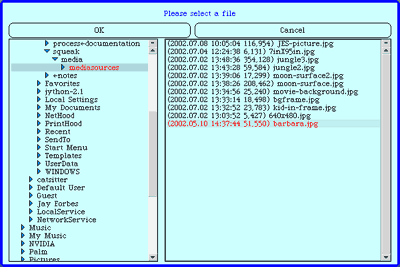

PixelTools allows you to find information about digital images.
Opening an Image
To open an image in PixelTools:
- click on "Open Image" button on the left side of the toolbar
- A dialog box will appear, in which you can browse the files on your computer (see image below). To open a folder, click on the blue triangle; to select a folder, click on the folder's name. All folders appear on the left, while the available images in the selected folder appear on the right. Remember, PixelTools only recognizes the graphic file type .jpg.
- Select a .jpg file and click on "OK"

Once you have opened an image, you can view information about its individual pixels by looking at the right side of the PixelTools toolbar. To select a pixel, just click anywhere on the image.
The following information in the toolbar changes to reflect the properties of the pixel you selected:
X= the x coordinate of the pixel (its horizontal position, counting from the left)
Y = the y coordinate of the pixel (its vertical position, counting from the top)
R = the Red value of the pixel (0 to 255)
G = the Green value of the pixel (0 to 255)
B = the Blue value of the pixel (0 to 255)
In addition, the box at the far right displays the color of the pixel.
The Color Tool is an image that represents the full spectrum of colors available using RGB values (see image below). By clicking on the color you would like to use, you can find its RGB value.